Japan / Miyagi / Shichikashuku
Shichikashuku
Shichikashuku · Miyagi
Shichikashuku
Highlighted on the Miyagi map.
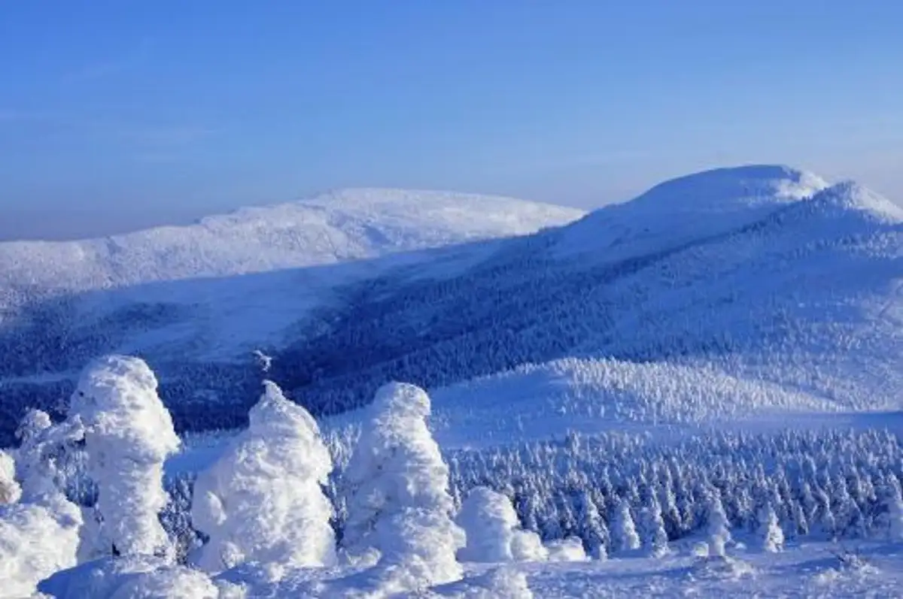
Stay
ふるさと体験交流館 街道HOSTELおたて
Furusato Taiken Kouryuu Kan Kaidou Hostel Otate
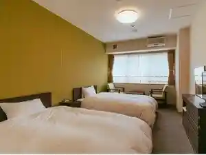
Dining
芭蕉庵
Bashou Iori
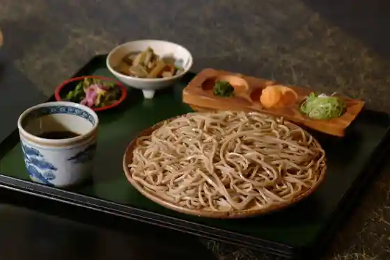
吉野屋
Yoshinoya
道の駅七ヶ宿
Michi No Eki Shichigashuku
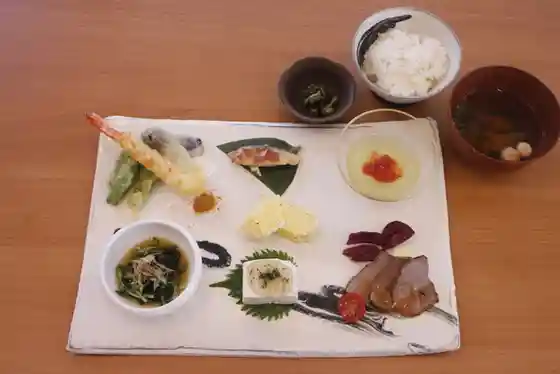
ブック&カフェ こ・らっしぇ
ブック&カフェ こ・らっしぇ
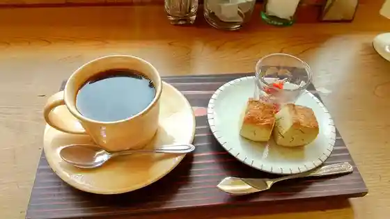
くらけんカフェ
Kuraken Kafe
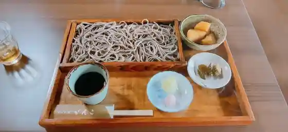
そばの里 がんこ
Sobano Sato Ganko
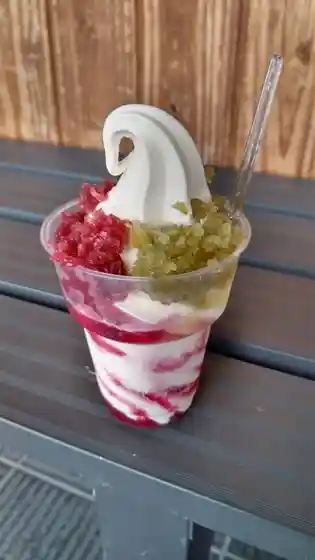
道の駅七ヶ宿 物産コーナー
Michi No Eki Shichigashuku Bussan Koonaa
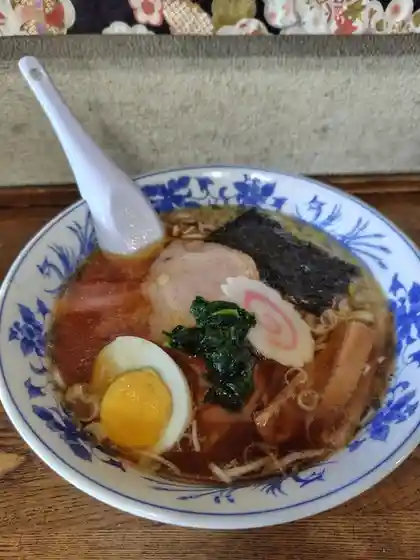
まるみつ食堂
Marumitsu Shokudo
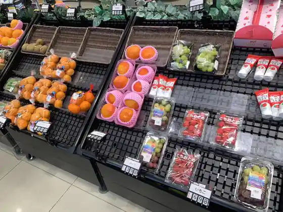
ファミリーマートプラスCOOP 七ヶ宿店
Famiriimaatopurasu Coop Shichigashuku Mise
石窯ピザ屋 水守の郷
Ishigama Piza Ya Mizumori No Sato
レストハウス ナッキー
Resutohausu Nakkii
横川せせらぎの里
Yokokawa Seseragino Sato
くらけんCafe
Cafe
ベースロッジ
Beesurojji
街道ホステルおたて
Kaidou Hosuteru Otate
長老湖売店
Chourou Mizuumi Baiten
すみやのくらし
Sumiyanokurashi
ウッドアンドスパ や・すまっしぇ
ウッドアンドスパ や・すまっしぇ
山の香り漬け直売所
Yama No Kaori Tsuke Chokubai Tokoro
牧之原
Makinohara
Zao Summit Rest House
Zao Summit Rest House
Shunnoichi
Shunnoichi
Pension Restaurant Shiroi Tokeidai
Pension Restaurant Shiroi Tokeidai
Matsunoya
Matsunoya
Nabe Chan
Nabe Chan
Base Lodge
Base Lodge
Maruitsu Shokudo
Maruitsu Shokudo
Rest House Nakki
Rest House Nakki
Shop
Michi-no-Eki Shichikashuku
Road station with local produce, souvenirs, and dam views on Route 113
Shun-no-Ichi Shichikashuku
Seasonal farm stand for vegetables, mountain vegetables, and mushrooms
Sights
Zao Frost-Covered Trees
Winter snow-monster rime ice landscape shared across Zao, Shichikashuku, and Kawasaki
Shichikashuku Dam
Large dam and lake park on the upper Shiroishi River
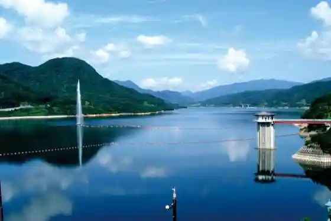
Minami-Zao Yamabiko-no-Mori Campground
Forest campground in southern Zao
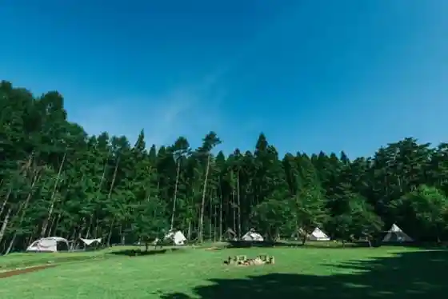
Kirara-no-Mori Auto Campground
Auto campground linked with the Shichikashuku ski area
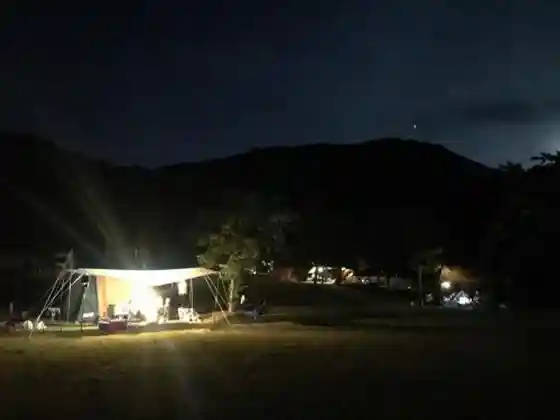
Kansen-ji Temple
Local temple in the Osugi area
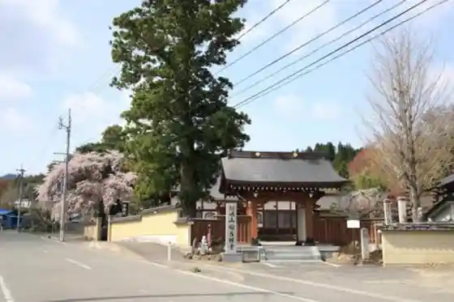
Water and History Museum
Town museum on water resources and local history beside the road station
Choro Lake
Mountain lake in the Kashiwagiyama area
Namezu Great Falls
Named waterfall in the Namezu valley
Toko-ji Temple
Temple at Danmae in the town-center area
Skunk Cabbage Colony
Spring wetland colony of Asian skunk cabbage
Yokokawa Gorge Autumn Leaves
Autumn foliage along the Yokokawa valley
Parent-and-Child Pines
Named twin pine trees — a local natural landmark